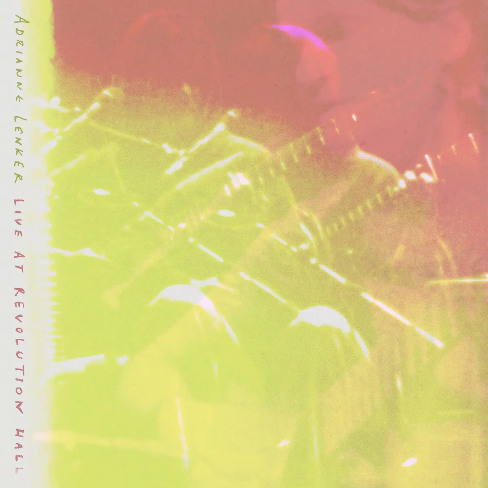

Album#0
Live at Revolution Hall
{kind=link}

专辑信息
- 专辑名称：Live at Revolution Hall
- 歌手： Adrianne Lenker
- 年份： 2025-04-24
- 风格：独立民谣
- 时长：约 120 分钟

今天是七夕，我想分享 born for loving you (live) :
born for loving you 歌词
After the first stars formed, after the dinos fell
After the first light flickered outta this motel
1991, mama pushin' like hell
Tangled in blood and vine
From my first steps, to my first words
To waddlin' around lookin' at birds
To the teenage nightmare, mine and yours
Thank God we made it through
'Cause I was born for lovin' you
Just somethin' I was made to do
Doesn't matter what dreams come true
I was born for loving you
翻译：
在第一颗恒星形成后，在恐龙都灭绝后
在这汽车旅馆的第一束光熄灭之后
1991 年，妈妈拼尽全力将我诞下
我在血脉藤蔓中降生
从蹒跚学步，到牙牙学语
摇摇晃晃追着小鸟走
共度青春期的混乱岁月
感谢我们熬过了所有
因为我生来只为爱你
这是我与生俱来的使命
无论美梦是否成真
我生来都只为爱你
「我生来只为爱你」，多么动人的告白。
在听这首的时候，一定要搭配紧跟着它的 I will always love you (live) ， Adrianne Lenker 翻唱了一小段的 I will always love you ，两首歌是无缝链接在一起的，同样也是关于爱的歌。
这张 live 专辑，收录了很多现场的声音，有一种随意的轻松感，显得很真实，也很有趣，可能当天有人生日，现场大家还一起唱了 happy birthday 。
专辑的封面是暖黄色的，若隐若现地看到歌手，给人一种温暖、回忆的感觉，而专辑的听感也是如此，那场 live 大家应该都很开心，回想起来也肯定很温暖。
除了 born for loving you ，专辑有几首歌的旋律我也很喜欢：
- vampire empire (live)
- anything (live)
- promise is a pendulum (live)
如果你去了解一下 Adrianne Lenker，你会发现她还是 Big Thief 的主唱, 这张专辑里唱的一些歌，有的就来自 Big Thief。
Big Thief 的那首 Paul 也是一首很浪漫的歌，推荐一听。
祝七夕看到的你，七夕快乐啦～
我很喜欢听歌，我想大部分人也都喜欢，不过大家的品味各不相同。
在 Zine 里我也放了一栏音乐分享，不知道人有没有会去找来听。
不过因为音乐分享只是一大堆信息中的一部分，或许很多人会直接略过，那些让我喜欢的歌和专辑，我真的很想让你也听听，所以我打算用一篇文章来分享。
另一个激发我写这个系列的，是 casouri 的 余日摇滚，我很喜欢他分享的内容，一张很大的封面，很多他对于专辑的感想。
这会是一个系列文章，不定期更新，主要会分享专辑，而不是单曲。
因为我觉得，有时候创作者会用整张专辑来表达一些内容，如果只是听其中一首单曲，或许就会错过些什么；而且往往一首单曲好听，说不定那张专辑里其他曲目也会给你带来惊喜。
我主要用网易云音乐听歌，所以文章中的大部分链接会来源网易云音乐。
关于怎么写好，我还在摸索，也是先尝试看看。
如果你只想订阅博客的 Album 系列的话，可以订阅 album.xml。